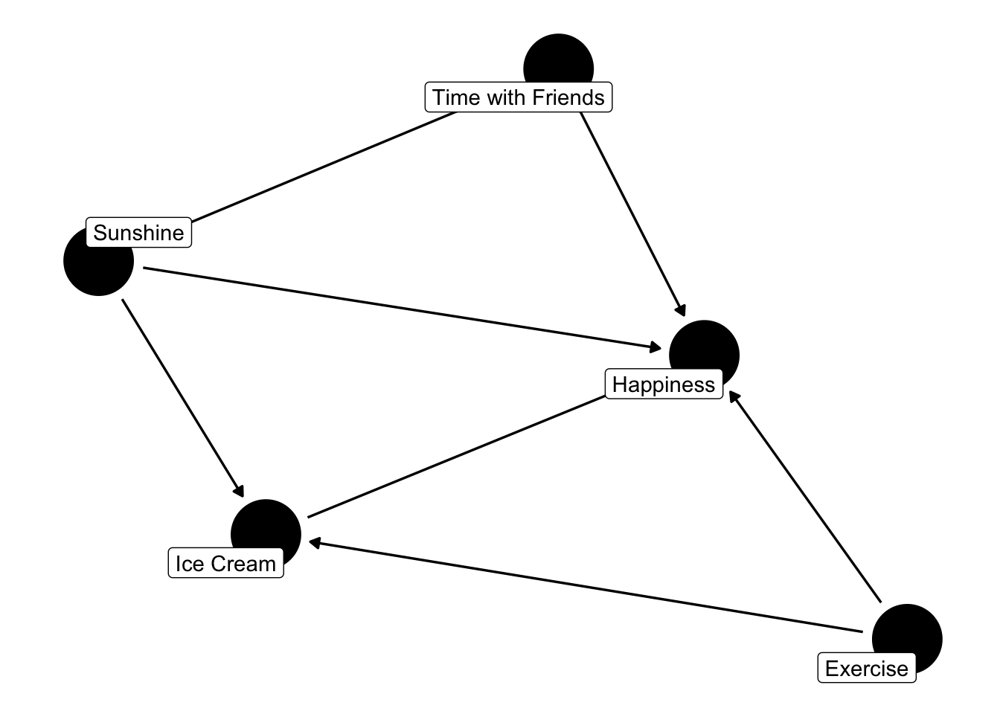

There are a ton of causal methods that are available and only increasing. To name a few: matching, inverse probability of treatment weighting, regression, machine learning methods, parametric g-formula, marginal structural models and many many more. This can make it tricky to figure out which to use. By comparing these quantitatively it can provide some additional evidence for choosing between methods for certain scenarios.
Side Note
This post will cover the basics of how to compare different methods used for causal inference. I can’t recommend Morris, White, and Crowther (2019) enough. It was extremely helpful when I was first learning how to do this and I continue to use it. As a result, you’ll see this article reference throughout this post. A big thank you to Anthony Hatswell for the recommendation!
First, Walk the DAG
Familiar with DAGs?
If you are new to causal inference, I recommend you check out (Rohrer 2018) or the ggdag R package to learn more about directed acyclic graphs (DAGs). For the purposes of this post, you can continue reading! Just know that this DAG guides which variables we want to adjust for (and which ones we don’t) to best mitigate certain types of bias.
First things first. We need to draw a directed acyclic graph (DAG). This will be needed to determine which variables to adjust for, which ones not to and more. Alright, let’s get started!
Wait, we need a research question! The fun part is we get to decide what we want to look at! For this post, we’ll look at the effect of ice cream on happiness level. We’ll assume that happiness is a continuous measure (since whether someone is happy or not isn’t really binary). We also get to decide what kind of variables we want to include! Let’s go with:
Ice Cream (the exposure)
Happiness (the outcome)
Sunshine (hours per day)
Time with Friends (hours per week)
Exercise (hours per day)
Code
library(tidyverse) # ol faithful library(ggdag) # used for the DAG theme_set(theme_dag()) # setting the theme of the DAG # Actually creating the DAG. Adding labels so we know the name of each variable. dag <- ggdag::dagify( happiness ~ ice_cream + sunshine + time_with_friends + exercise, time_with_friends ~ sunshine, ice_cream ~ sunshine + exercise, exposure ="ice_cream",outcome ="happiness",labels =c(happiness ="Happiness",ice_cream ="Ice Cream",sunshine ="Sunshine",time_with_friends ="Time with Friends",exercise ="Exercise" ))ggdag::ggdag(dag, text =FALSE, use_labels ="label") # actually showing the DAG

Great now we have our DAG! Now let’s see what we have to adjust for. Luckily we can use the handy dandy ggdag package! Or if you don’t use R, there’s an online tool dagitty. Either way, let’s have a look.
Code
ggdag::ggdag_adjustment_set(dag)
Perfect! Looks like we have to adjust for sunshine and exercise. The next step is to think about what exactly we want to estimate.
Why Causal Estimand…Why?
Individual treatment effects are the ultimate goal but it is very difficult to determine them (at least at the time of this post). Instead, we use an average of the effects. The question becomes the average of who? The overall sample? People who are like those who received the treatment? Choosing this is an important step because it guides who we make inferences about. Quickly, there are basically four different options:
Average treatment effect (ATE)
Average treatment effect in the treated (ATT)
Average treatment effect in the untreated (ATU)
Average treatment effect in the overlap (ATO) (aka for those patients that we don’t don’t know
For this let’s use the ATT. In the real-world, we’d put thought into which estimand we want to estimate and not just pick one willy nilly. A great resource for this is Greifer and Stuart (2021).
Not all estimands are applicable for all methods
It’s very important to consider this when comparing different methods. A great example of this is comparing propensity score matching (PSM) and inverse probability of treatment weighting (IPTW). PSM can only estimate the ATT because we’re matching treated patients to those that are untreated. This results in a sample that looks similar to the treated patients.
If we were to compare this with IPTW (using the default setting in some packages), we could accidentally end up estimating the ATE. Comparing this result with PSM is problematic. Why? Because they’re estimating different things!
Not all is lost, with IPTW you can estimate any of the four causal estimands. This isn’t true for all methods, so we need to make sure it’s the same causal estimand.
“Better” Scientifically
Great, so we’re ready to compare! Right?! GIMME SOME DATA! Not quite yet but almost there! We need to decide how exactly we’re going to quantify the difference. This essentially comes down to the research question we’re asking. Do we want to know if one approach results in a model with a better fit? Or do we want to know which model has lower variance? Maybe we want to know which one has a higher power. For this example, we’ll use the mean squared error (MSE) and relative percent increase in precision.
Choosing Measure
I highly, HIGHLY recommend the article by Morris, White, and Crowther (2019) for more about choices in comparing methods. It’s my personal go-to when I’m doing anything involving simulation.
Methods, Methods, Methods!
Methods, methods, methods! Unlike Beetlejuice, saying it three times won’t make a method appear. So we need to pick the two methods that we want to compare. Now in reality, these don’t usually happen sequentially. There may be two methods that you want to compare, so you then work backwards to draw a DAG a made-up situation (or one based on a real causal hypothesis). Regardless, it’s important to know what two methods you are using and how they differ in how they work.
For example, it could be helpful to compare inverse probability of treatment weighting and the parametric g-formula. Both can estimate the average treatment effect, but they do so differently. IPTW models the treatment whereas the parametric g-formula models the outcome. It would be expected that these wouldn’t give the exact same result. Although they could still be compared since they should be similar. Essentially, it’s important to know how the methods may differ and what would be expected versus unexpected.
Finally an Example! With Data!
Alright, let’s put it all together with some simulation! We’re going to use the DAG from before to compare IPTW and PSM.
Simulating Data
Time to simulate some data! We’ll use our handy dandy DAG from before to guide us on this. Personally, before continuing with running it multiple times, I like to do a test run. First I simulate some data to play around with the proportions. For example, what kind of coefficients do we need to get the desired ratio (roughly) of treated versus controls, etc.
Code
set.seed(456) # setting seed for reproducibility# Picking an arbitrary sample size. This can sometimes be altered as well, if we want to compare the difference in methods as a function of sample size. For example, maybe we want to see if PSM and IPTW become the same (or simliar enough) as sample size increasesn =500# arbitrary theta =3# this is what the actual effect is (we'll use this later for some of the metrics)df =data.frame(sunshine =rnorm(n = n, mean =10, sd =2),exercise =rnorm(n = n, mean =1, sd =0.25)) %>% dplyr::mutate(time_with_friends =2+1.5*sunshine, ice_cream =rbinom(n = n, size =1, prob =0.01+0.0167*sunshine +0.2*exercise),happiness = theta*ice_cream +2*sunshine +1.5*time_with_friends +2.5*exercise )
Alright now let’s test fitting a version for each method. Personally, I do this first before getting into repeating it. This is just to make sure nothing is a miss with the models and fit.
Code
# Note: these results are muted here, but suggest using broom::tidy to check the outputs. # Packageslibrary(WeightIt) # we'll use this for IPTWlibrary(MatchIt) # we'll use this for PSM # Testing Matching the data matched <- MatchIt::matchit(ice_cream ~ sunshine + exercise, data = df, method ="nearest", estimand ="ATT")# Outcome Model mod <- stats::glm( happiness ~ ice_cream, data =match.data(matched) # using the matched data )# IPTW Model ipw <- WeightIt::weightit(ice_cream ~ sunshine + exercise, data = df,method ="glm", estimand ="ATT") # by default the estimand will be ATE# Outcome model with iptwmod_ipw <- stats::glm( happiness ~ ice_cream, data = df,weights = ipw$weights # weights from PSM )
Repeat, Repeat, Repeat…Then Repeat Again!
Now that we have a sample, we can make these into functions and simulate. For the purposes of this post we’ll just select 1000 for the number of times we’ll repeat the process. In practice, choosing the number of times that we actually want to do this is more nuanced. Any guesses what reference I’ll suggest? Yup! Morris, White, and Crowther (2019)
Now let’s repeat for each of these. First, for PSM then for IPTW.
Code
library(broom) # we'll need this one for cleaning the model output # PSM# Creating a function that simulates data, then matches the treated (aka those that had ice cream) to the controls (those that did not). simulate_psm <-function(n, theta) { # theta is the "true" effect df =data.frame(sunshine =rnorm(n = n, mean =10, sd =2),exercise =rnorm(n = n, mean =1, sd =0.25)) %>% dplyr::mutate(time_with_friends =2+1.5*sunshine, # assume total hours per week ice_cream =rbinom(n = n, size =1, prob =0.01+0.0167*sunshine +0.2*exercise),happiness = theta*ice_cream +2*sunshine +1.5*time_with_friends +2.5*exercise ) # Matching data psm <- MatchIt::matchit(ice_cream ~ sunshine + exercise, data = df, method ="nearest", estimand ="ATT")# Fitting an outcome model outcome_model <-glm(happiness ~ ice_cream, data =match.data(psm))# Extracting only the term that we care about estimate <- broom::tidy(outcome_model) %>% dplyr::filter(term =="ice_cream") %>%pull(estimate)return(estimate)}# Repeat!# Repeating 1000 times. Arbitrarly choosing a sample size of 500 and "true" effect of 3psm_output <-replicate(1000, simulate_psm(500, 3), simplify =FALSE) # Reformatting psm_output <-do.call(rbind, psm_output) %>%# reformatting as.data.frame()psm_output$theta_hat <- psm_output$V1 # renaming the variable# Calculating some things that will be needed later. Namely, the error and squared error. The formula for these (and the metrics used later on) are in Morris et al. (2019)psm_result <- psm_output %>%mutate(error = theta_hat - theta,squared_error = error^2 )avg_theta =mean(psm_result$theta_hat) # calculating the average of the estimated effectpsm_mse = (1/1000)*sum(psm_result$squared_error) # calculating the mean squared error# Calculating the empirical standard errorpsm_se_result = psm_result %>%mutate(se_mse_num = (squared_error - psm_mse)^2,squared_diff = (theta_hat - avg_theta)^2 )psm_mse_se <-sqrt(sum(psm_se_result$se_mse_num) / (1000*(1000-1)))psm_emp_se <-sqrt((1/(1000-1))*sum(psm_se_result$squared_diff))
Great! PSM is all done. Now let’s do the same thing for IPTW.
Code
# Doing the same as above for PSM. Rather to the above code chunk for comments on the processsimulate_ipw <-function(n, theta) { df =data.frame(sunshine =rnorm(n = n, mean =10, sd =2),exercise =rnorm(n = n, mean =1, sd =0.25)) %>% dplyr::mutate(time_with_friends =2+1.5*sunshine, ice_cream =rbinom(n = n, size =1, prob =0.01+0.0167*sunshine +0.2*exercise),happiness = theta*ice_cream +2*sunshine +1.5*time_with_friends +2.5*exercise ) ipw <- WeightIt::weightit(ice_cream ~ sunshine + exercise, data = df, estimand ="ATT",method ="glm") outcome_model <-glm(happiness ~ ice_cream, data = df, weights = ipw$weights) estimate <- broom::tidy(outcome_model) %>% dplyr::filter(term =="ice_cream") %>%pull(estimate)return(estimate)}ipw_output <-replicate(1000, simulate_ipw(500, 3), simplify =FALSE) ipw_output <-do.call(rbind, ipw_output) %>%# reformatting as.data.frame()ipw_output$theta_hat <- ipw_output$V1 ipw_result <- ipw_output %>%mutate(error = theta_hat - theta,squared_error = error^2 )avg_theta =mean(ipw_result$theta_hat)ipw_mse = (1/1000)*sum(ipw_result$squared_error)ipw_se_result = ipw_result %>%mutate(se_mse_num = (squared_error - ipw_mse)^2,squared_diff = (theta_hat - avg_theta)^2 )ipw_mse_se <-sqrt(sum(ipw_se_result$se_mse_num) / (1000*(1000-1)))ipw_emp_se <-sqrt((1/(1000-1))*sum(ipw_se_result$squared_diff))
Code
# Calculating these metrics using Morris et al. (2019). increase_precision <-round(100*((ipw_emp_se/psm_emp_se)^2-1 ),2) # Increase in precision for IPTW vs PSMcorr =cor(ipw_result$theta_hat, psm_result$theta_hat) # correlation between the two ratio <- ipw_emp_se/psm_emp_sese_increase_precision <-round(200*(ratio^2)*sqrt((1-(corr^2))/(1000-1)), 2)
Now we have some results! The MSE for PSM is 0.14 (0.01) and 0.01 (0.00075) for IPTW. The increase in precision is -88.52 (0.73). We need to unpack these results since there are a few things to keep in mind.
Firstly, we didn’t assess the balance. The whole point of using these methods is to ensure exchangeability. When comparing two methods, we should also compare how the balance between the methods looks. Does one method result in better balance or no? This can be done graphically and/or using love plots (recommend the cobalt package for this). Secondly, the same size was 500. Perhaps, more importantly, is the number of patients getting matched. Do we have enough controls for our treatment? What if we didn’t? What if we did? Thirdly, there were only two confounders. How would the results change if we included more? A last point (to not bore you to death): we included the two variables we know were confounders. What would happen if we left one out? (aka if the model was misspecified?).
When comparing results it’s important to not just look numerically. There are other limitations of that may not be as easy to quantify. For example, PSM only keeps patients with a match. Would we be sure that these patients match our inclusion/exclusion criteria? Or is it a subset of these criteria? Or is selection bias being induced? We need to incorporate these pieces when comparing methods.
This isn’t to say that the above is necessarily wrong. It’s just important to consider the limitations of what we did do. As put in Morris, White, and Crowther (2019), starting simple is the best and I agree. We can now build on this!
Metrics That Rely on Standard Error
We should use caution when using using metrics relying on standard error. For PS-based methods, we need to use appropriate variance estimators. This can make it tricky when using certain metrics. Imagine we are comparing IPTW and PSM based on power for nominal coverage. Both of these need SE. If we’re using robust variance estimation (HC0) for PSM and M-estimation for IPTW, are these really comparing IPTW vs PSM? Or would the different variance estimation techniques have something to do with the differences? It’s important to consider this.
Why Bother?
At this point, you may be thinking “why both doing this? This is a lot of work when I can just say one over the other”. The answer is two-fold. Firstly, it’s not always clear what the best approach is. It can depend on the setting and outcome (continuous, binary, time-to-event). It’s helpful to quantify this when discussing with a team. Secondly, when we compare methods it’s helpful to know “how much”. One method may have higher precision but how much is “higher”. Using different metrics also helps to figure out what should be more emphasized (i.e., precision vs bias, etc).
Using this approach, based on real world data, can partially help making a decision. I’ve learnt a lot from using this approach and continue to use it when comparing new methods. Two recent examples are looking into TMLE, BART and energy balancing. Hope you find this approach useful too!
References
Greifer, Noah, and Elizabeth A Stuart. 2021. “Choosing the Causal Estimand for Propensity Score Analysis of Observational Studies.”arXiv Preprint arXiv:2106.10577.
Morris, Tim P, Ian R White, and Michael J Crowther. 2019. “Using Simulation Studies to Evaluate Statistical Methods.”Statistics in Medicine 38 (11): 2074–2102.
Rohrer, Julia M. 2018. “Thinking Clearly about Correlations and Causation: Graphical Causal Models for Observational Data.”Advances in Methods and Practices in Psychological Science 1 (1): 27–42.